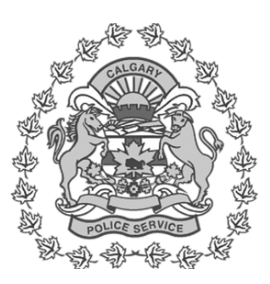
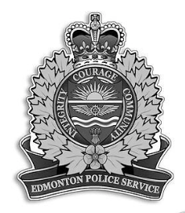
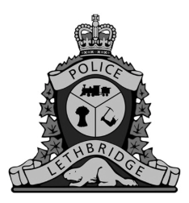
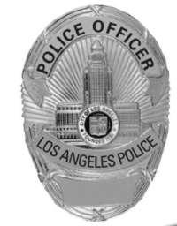
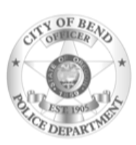
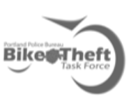
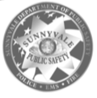
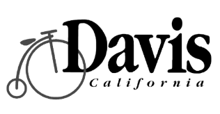
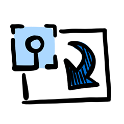
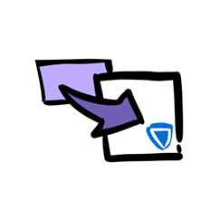

The #1 platform for bike theft recovery
Bike Index is a comprehensive database and management tool that gives law enforcement real-time metrics, investigative tools, and a community-powered recovery platform, so you can clear more cases and protect your community.
Trusted by law enforcement nationwide

Calgary
Edmonton
Lethbridge Boise City
Boise City

Los Angeles
Bend
Portland
Sunnyvale
Davis
Boise City
A universal system that outperforms closed local registries
Law Enforcement Dashboard
See registration efforts in real-time. Track regional metrics, filter by time period, and export data to share results up the chain of command.

Investigative Resources
QR stickers, LeadsOnline integration, daily stolen bike hot sheets, and credibility badges help you identify bad actors and verify ownership.
Community Recovery
Our network of ambassadors and social media tools turn your community into allies. Automatic theft alerts on Twitter, Facebook, and Instagram.
Comprehensive tools for every scenario

LeadsOnline Integration
Theft victims add their police report number, entering bikes into LEADS so pawn shops can flag stolen property.

Daily Hot Sheet
Local stolen bike reports delivered to your inbox every morning with complete details and photos.

Law Enforcement Dashboard Analytics
Filter bikes by time and status to track trends and identify where recovery efforts are most effective.

Direct Contact with Owners
Message bike owners directly via phone or email for abandoned bikes and recovered property with logged communications.

Data Export
Export and share registration and recovery data with leadership to demonstrate program impact and success.

Impound Lot Management
Upload and search impound lot bikes, automatically notify owners, and manage ownership claims through the platform.
Credibility Badges
Owner credibility scores based on account age, registration source, and history help identify legitimate claims.
POS Integration
Local bike shops automatically register every bike they sell directly into your law enforcement dashboard system.
Social Media Alerts
Automatic social media posts on Twitter, Facebook, and Instagram reach bike-sympathetic community members who can help.

QR Stickers
Tamper-proof stickers break apart when removed and provide instant owner lookup for recovered bikes in the field.
Testimonials
"We're going to find a lot more stolen bikes quicker and hope to alleviate the bike thefts that are happening."
"With Calgarians already registering almost 9,000 bikes and further building Bike Index's database, Calgary's recovery number is already climbing."
"We are very excited to partner with Bike Index, as this partnership symbolizes a joint effort in returning countless numbers of bicycles to their rightful owners."
Ready to recover more bikes and clear more crimes?
Join 1,800+ organizations using the world's most widely used bike registration network.